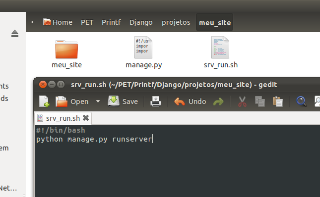
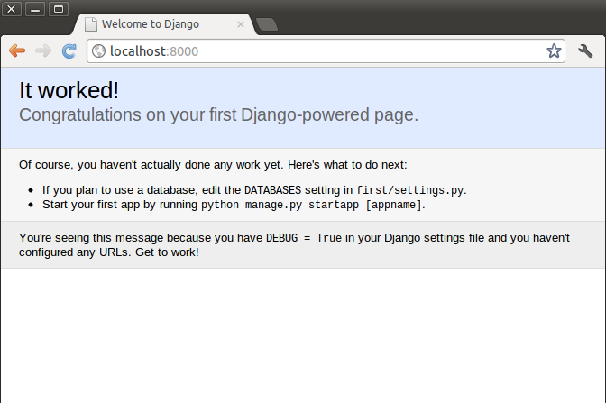

Iniciando um Projeto(){
Dicas
A criação de um Projeto
Para iniciar um projeto simples, primeiramente crie uma pasta onde ficarão todos os seus projetos Django e guarde o caminho do diretório. Exemplo:
c:\projetos (para Windows)
/home/fulano/projetos” (para Linux)
Criemos agora o projeto neste diretório. No prompt de comando do Windows digite:
"python c:\Python27\Scripts\django-admin.py startproject meu_site"
(levando em consideração que o diretório em que se encontra o python seja Python27, caso contrário, certifique-se do nome correto.)
Em distribuições Linux, digite o equivalente no terminal:
“django-admin.py startproject meu_site”
Inicializando o servidor Django:
Agora temos o diretório do novo projeto criado juntamente com as configurações necessárias para já inicializar um servidor em sua máquina. No diretório meu_site crie os seguintes arquivos:
Em Windows gere um arquivo com extensão .bat, exemplo “srv_run.bat”, com o conteúdo:
python manage.py runserver
pause
Em Linux o equivalente “.sh”, escreva:
#!/bin/bash
python manage.py runserver

sudo chmod +x srv_run.sh, via terminal)
Salve os arquivos e os execute com clique duplo.
Testando:
Abra seu navegador de preferência e digite:
http://localhost:8000
Uma tela sinalizando sucesso, como esta abaixo irá aparecer:
Funciona!
}